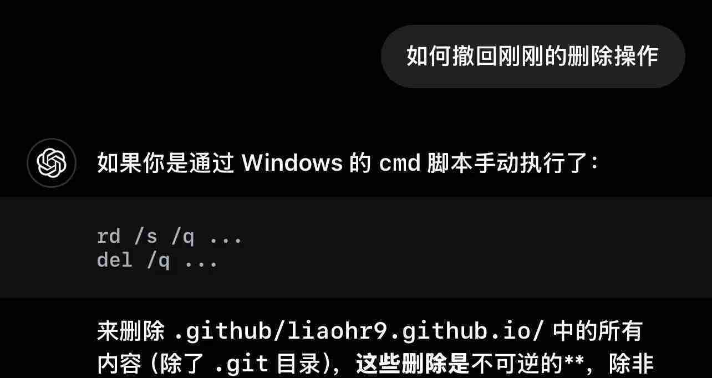

误删文件后的恢复尝试与教训
误删文件后的恢复尝试与教训
一、事件背景：一个危险的BAT脚本
最近在搭建个人网站（hexo个人网站）时，我想通过GPT生成一个能实现「自动删除文件、自动复制文件、自动git上传」的BAT脚本。由于没有仔细验证代码安全性，直接使用了GPT生成的脚本，最终导致了严重的数据丢失。
GPT生成的BAT脚本如下：1
2
3
4
5
6
7
8
9
10
11
12
13
14
15
16
17
18
19
20
21
22@echo off
setlocal enabledelayedexpansion
set "target=E:\创作\个人网站\Leon_Blog"
echo Deleting all contents in %target% except .git folder...
:: 删除文件夹
for /d %%D in ("%target%\*") do (
if /i not "%%~nxD"==".git" (
echo Deleting folder: %%D
rd /s /q "%%D"
)
)
:: 删除文件
for %%F in ("%target%\*") do (
if /i not "%%~nxF"==".git" (
echo Deleting file: %%F
del /q "%%F"
)
)
这个脚本的预期功能是：删除E:\创作\个人网站\Leon_Blog目录下所有子目录和文件，但保留.git文件夹。但它存在致命缺陷：当target路径不存在或无法被正确解析时，"%target%\*"会被错误解析为"E:\*"（即E盘根目录），导致脚本对整个E盘执行删除操作。
二、误删过程：E盘根目录文件被批量删除
执行脚本后，我看到命令行中快速闪过大量文件名，才意识到不对劲，立刻按Ctrl+C停止，但已经来不及了——E盘根目录下的所有文件和文件夹已被批量删除，相当于E盘被「格式化」了。
三、恢复尝试：三款工具的使用与结果
为了减少损失，我立刻停止对E盘的任何操作（避免覆盖数据），并尝试了以下恢复工具：
1. Recuva（免费数据恢复工具）
Recuva是一款经典的免费数据恢复软件，支持多种文件类型，操作相对简单。
使用步骤：
- 第一步：选择需要恢复的文件类型（这会影响扫描速度和准确度）

- 第二步：选择需要扫描的驱动器（此处选择E盘）

- 第三步：启动深度扫描（Deep Search）

恢复结果：
- 深度扫描后查到约5万多个文件，软件显示「有效恢复」的约2万多个，但实际能正常打开的文件极少。
- 恢复的文件被无序放在同一个文件夹中，原有的文件结构完全丢失，使用起来非常不便。
官网链接：Recuva 官方网站
2. Windows File Recovery（微软自带命令行工具）
Windows File Recovery是微软官方推出的命令行恢复工具，支持更多文件类型，虽然操作复杂，但恢复效果相对更好。
基本步骤：
- 如有必要，请从 Microsoft 应用商店安装应用：
Windows File Recovery - 按 Windows 键，在搜索框中输入Windows File Recovery，然后选择“Windows File Recovery”。
- 当系统提示你允许应用对设备进行更改时，请选择“是”。
- 在 “命令提示符”窗口中，按以下格式输入命令：
winfr source-drive: destination-drive: [/mode] [/switches] 有 2 种基本模式可用于恢复文件：“常规”和“广泛”。
常规模式示例- 将 Documents 文件夹从 C： 驱动器恢复到 E： 驱动器上的恢复文件夹（不要忘记文件夹末尾的反斜杠 \）：
Winfr C: E: /regular /n \Users\<username>\Documents\ - 将 PDF 和Word文件从 C： 驱动器恢复到 E： 驱动器上的恢复文件夹：
Winfr C: E: /regular /n *.pdf /n *.docx
广泛的模式示例
- 使用通配符恢复文件名中包含字符串“invoice”的任何文件：
Winfr E: C: /extensive /n *invoice* - 将 jpeg 和 png 照片从“图片”文件夹恢复到 E： 驱动器上的恢复文件夹：
Winfr C: E: /extensive /n \Users\<username>\Pictures\*.JPEG /n\Users\<username>\Pictures\*.PNG
注意：源驱动器和目标驱动器必须不同。从操作系统驱动器（通常是C:）恢复时，请使用
/n <filter>开关指定用户文件或文件夹。微软会在目标驱动器上自动创建名为Recovery_<date and time>的恢复文件夹。- 将 Documents 文件夹从 C： 驱动器恢复到 E： 驱动器上的恢复文件夹（不要忘记文件夹末尾的反斜杠 \）：
- 当系统提示确认继续时，请输入 Y 以启动恢复操作。这可能需要一段时间，具体取决于源驱动器的大小。若要停止恢复过程，请按 Ctrl + C。
关于模式和文件系统：
以下信息可帮助你确定你拥有哪个文件系统以及要使用的模式。
文件系统
| 文件系统 | 示例 |
|---|---|
| FAT 和 exFAT | SD 卡、闪存或 U 盘 (< 4GB) |
| NTFS | 计算机（HDD、SSD）、外部硬盘驱动器、闪存或 U 盘 (> 4GB) |
Windows 支持的多个文件系统因存储设备或操作系统而异。仅广泛模式支持从非 NTFS 文件系统恢复文件。若要查看你拥有的文件系统，请右键单击文件资源管理器中的驱动器，然后选择“属性”。
决定使用哪种模式
| 文件系统 | 情况 | 建议模式 |
|---|---|---|
| NTFS | 最近删除 | Regular |
| NTFS | 前一段时间已删除 | 广泛 |
| NTFS | 格式化磁盘后 | 广泛 |
| NTFS | 损坏的磁盘 | 广泛 |
| FAT 和 exFAT | 任何 | 广泛 |
命令行语法：
常规语法
| 参数/开关 | 说明 | 支持的模式 |
|---|---|---|
| Source-drive: | 指定文件丢失的存储设备。必须与目标驱动器不同。 | 全部 |
| Destination-drive: | 指定要放置恢复文件的存储设备和文件夹。必须与源驱动器不同。 | 全部 |
| /regular | 常规模式，未损坏的 NTFS 驱动器的标准恢复选项 | Regular |
| /extensive | 广泛模式，适用于所有文件系统的彻底恢复选项 | 广泛 |
| /n |
使用文件名、文件路径、文件类型或通配符扫描特定文件。例如： - 文件名：/n myfile.docx - 文件路径：/n /users/\ - 通配符：/n myfile.*、/n *.docx、/n \ |
全部 |
| /? | 一般用户的语法和开关摘要。 | 全部 |
| /! | 高级用户的语法和开关摘要。 | 全部 |
高级语法
| 开关 | 说明 | 支持的模式 | ||
|---|---|---|---|---|
| /ntfs | NTFS 模式，使用主文件表实现正常 NTFS 驱动器的快速恢复选项 | NTFS | ||
| /segment | 段模式，使用文件记录段的 NTFS 驱动器的恢复选项 | 段 | ||
| /signature | 使用文件标头的所有文件系统类型的签名模式和恢复选项 | 签名 | ||
| /y: |
恢复特定扩展组，逗号分隔 | 签名 | ||
| /# | 签名模式扩展组和支持的文件类型。 | 签名 | ||
| /p: |
将恢复操作的日志文件保存在与恢复驱动器上的默认位置不同的位置（例如， D:\logfile）。 | 全部 | ||
| /a | 重写用户提示，这在脚本文件中很有用。 | 全部 | ||
| /u | 例如，从回收站中恢复未删除的文件。 | NTFS 段 | ||
| /k | 恢复系统文件。 | NTFS 段 | ||
| /o:<a\ | n\ | b> | 指定在选择是否覆盖文件时，是始终（a），从不（n），还是始终保留两者（b）。默认操作是提示覆盖。 | NTFS 段 |
| /g | 恢复没有主数据流的文件。 | NTFS 段 | ||
| /e | 为了保持结果易于管理并专注于用户文件，默认情况下会筛选某些文件类型，但此开关会删除该筛选器。有关这些文件类型的完整列表，请参阅此表后面的信息。 | NTFS 段 | ||
| /e: |
指定筛选的文件类型。有关这些文件类型的完整列表，请参阅此表后面的信息。 | NTFS 段 | ||
| /s: |
指定源设备上的扇区数。若要查找扇区信息，请使用 fsutil。 | 段、签名 | ||
| /b: |
指定源设备上（分配单元）群集大小。 | 段、签名 |
文件扩展名筛选器列表
默认情况下，将从结果中筛选以下文件类型。使用 /e 开关禁用此筛选器，或使用 /e:<extension> 筛选器来指定要筛选的文件类型。
_, adm, admx, appx, appx, ascx, asm, aspx, aux, ax, bin, browser, c, cab, cat cdf-ms, catalogItem, cdxm, cmake, cmd, coffee, config, cp, cpp, cs, cshtm, css, cur, dat, dll, et, evtx, exe, fon, gpd, h, hbakedcurve, htm, htm, ico, id, ildl, ilpdb, iltoc, iltocpdb, in, inf, inf_loc, ini, js, json, lib, lnk, log, man, manifest, map, metadata, mf, mof, msc, msi, mui, mui, mum, mun, nls, npmignore, nupkg, nuspec, obj, p7s, p7x, pak, pckdep, pdb, pf, pkgdef, plist, pnf, pp, pri, props, ps1, ps1xm, psd1, psm1, py, resjson, resw, resx, rl, rs, sha512, snippet, sq, sys, t4, targets, th, tlb, tmSnippet, toc, ts, tt, ttf, vb, vbhtm, vbs, vsdir, vsix, vsixlangpack, vsixmanifest, vstdir, vstemplate, vstman, winmd, xam, xbf, xm, xrm-ms, xs, xsd, ym
我的操作与结果：
我选择的恢复命令如下：1
Winfr C: E: /regular /n E:/
执行后，软件提示输入Y确认恢复操作。恢复完成后，文件被放在E盘的Recovery_<date and time>文件夹中。
- 优势：保留了完整的文件结构（包括文件夹层级），一些久未使用的文件夹被完整恢复。
- 不足：大部分文件（如PDF、DOCX）打开后显示损坏，仅少数TXT文件和图片能正常打开。
3. DiskGenius（未尝试的专业工具）
DiskGenius是一款功能强大的专业数据恢复软件，支持多种文件系统和恢复模式，提供图形界面，操作相对简单。但由于前两次尝试已消耗较多时间，我未进一步尝试。
官网链接：DiskGenius 官方网站
四、总结与教训
这次事件让我深刻意识到数据安全的重要性，总结以下教训：
1. 数据无价，操作前务必备份
涉及文件删除、格式化等危险操作时，一定要先备份重要数据。即使是「看似简单」的脚本，也可能因意外导致不可逆的损失。
2. 谨慎使用AI生成的代码
AI生成的代码可能存在潜在风险（尤其是文件操作、系统命令类），使用前必须：
- 逐行检查逻辑（如本次脚本的路径解析漏洞）；
- 在测试环境中验证（用空文件夹或非重要数据测试效果）；
- 明确代码的「边界条件」（如路径不存在时的处理）。
就像下图的提醒：AI不会为你的错误负责，最终承担损失的是自己。

3. 数据恢复的注意事项
- 误删后立即停止对目标磁盘的操作（避免新数据覆盖原有扇区）；
- 优先使用专业工具（如DiskGenius）或官方工具（如Windows File Recovery）；
- 恢复后需逐一验证文件完整性，不要依赖「恢复成功」的提示。
希望我的经历能给大家提个醒：对待数据操作，再谨慎也不为过。